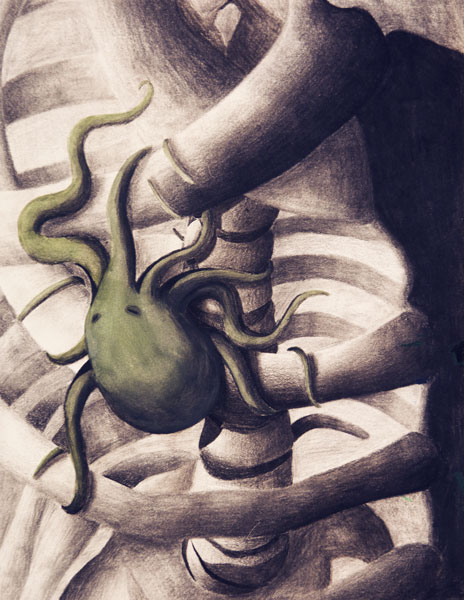

Art
One of the first mediums of art I've ever encountered are the charcoal and graphite work you see here. These are the first stepping stones and the many stones after it that I've done with them. From the abstract to the human figure, I've enjoyed documenting all of it and everything in between.
